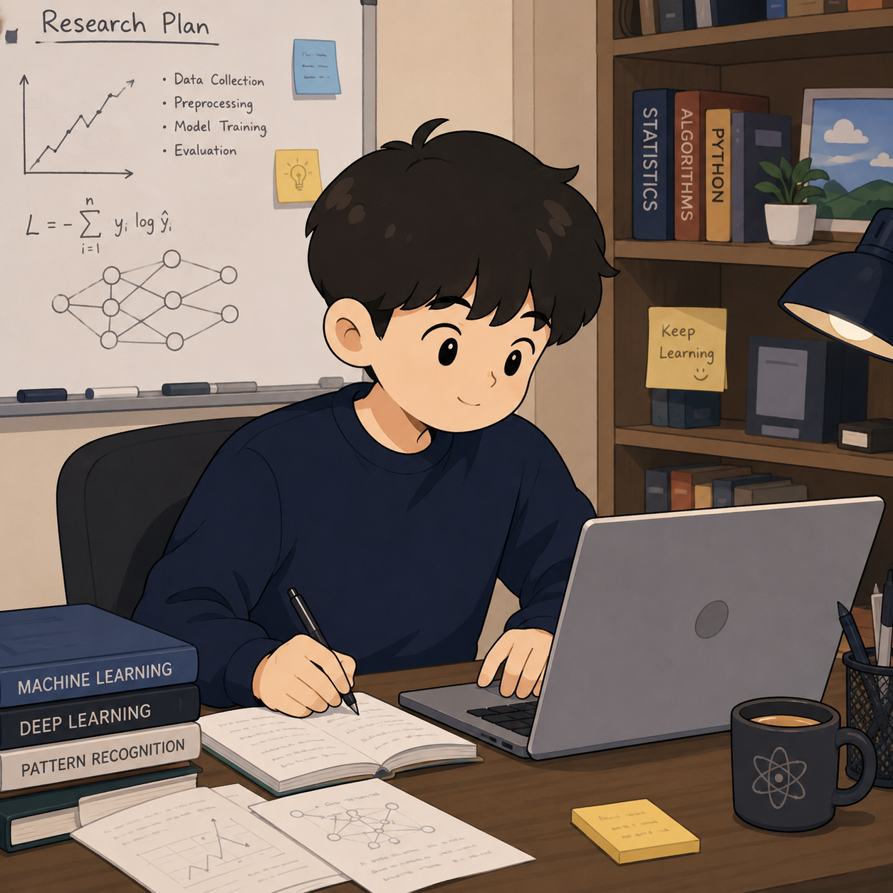

Seoul National University
Seongwon Kang 강성원
Undergraduate at Seoul National University, studying Aerospace Engineering and Artificial Intelligence. I work at the intersection of numerical methods and AI.
01 About Me
- Status Undergraduate student
- Affiliation Seoul National University
- Major Aerospace Engineering
- Interdisciplinary Major Artificial Intelligence
- Interests Numerical methods & AI
I am interested in how classical computational techniques and modern machine learning can be combined to model and solve physical and engineering problems.
02 Research Interests
-
Numerical Methods
Numerical analysis and scientific computing for engineering and physical systems.
-
Artificial Intelligence
Machine learning and its application to modeling, prediction, and simulation.
-
Numerical Methods × AI
Bridging traditional numerical techniques with data-driven, learning-based approaches.
03 CV / Resume
Education
-
Seoul National University
Major in Aerospace Engineering · Interdisciplinary Major in Artificial Intelligence
Skills
Experience
-
Graduation Project — r-Adaptation with PINNs
Applied physics-informed neural networks (PINNs) to r-adaptation, combining numerical methods with a learning-based approach.
-
Turbulent Flow — Term Project
Analysis of DNS (direct numerical simulation) data of turbulent flow for Turbulent Flow (M2794.009100).
04 Projects
Selected work and ongoing studies.
-
Graduation Project — r-Adaptation with PINNs
Graduation ProjectUsed physics-informed neural networks (PINNs) for r-adaptation, combining numerical methods with a learning-based approach.
-
Turbulent Flow — Term Project
CourseworkAnalyzing DNS (direct numerical simulation) data of turbulent flow as a term project for Turbulent Flow (M2794.009100).
05 Courses I Plan to Take
Courses I am planning to take.
06 Contact
Feel free to reach out.
- Email kangssss@snu.ac.kr
- GitHub github.com/tjdwon
07 AI Usage
This website was created and refined with the help of an AI coding tool.
- Tool Claude Code
- Prompt “Build a simple, academic personal website for GitHub Pages with About, Research, CV, Projects, Courses, and Contact sections.”